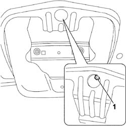
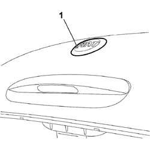

7055A83 BADGE ON TAILGATE - R.R
- Path
- Procedures > 70 FITTINGS > 7055 MOULDINGS AND PROTECTION > 7055A EXTERIOR MOULDINGS > 7055A83 BADGE ON TAILGATE - R.R
- Kind
- repair procedure (removal / refitting; the operation number is the code)
- Applies to
- all engines; all production periods
- Interactive page
- https://sloeber94.github.io/elrnDB-fCrm/en/#/194001175
Applies to: all engines; all production periods
 Removing
Removing
 Refitting
Refitting- Open the tailgate.
Op. 7015A04 TAILGATE INTERIOR PANEL - R+R
1. Working from the inside, undo the nut fixing the badge.

Applies to: all engines; all production periods
- Remove the badge from the tailgate.

Applies to: all engines; all production periods
Refitting
Removing- Place the badge on the tailgate.
- Working from the inside, tighten the nut fixing the badge.